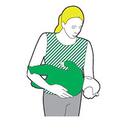
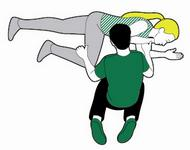

The recovery position
If someone is unresponsive and breathing then you need to turn them onto their side and into the recovery position, to keep their airway open so they can still breathe.
The recovery position for babies (under one year old)
- Cradle the baby in your arms with their head tilted downwards. Holding them in this position will keep their airway open and stop them choking on their tongue or breathing in any vomit.

Recovery position for adults and children (one year and above)
- Kneel down next to them on the floor.
- Follow the next three steps if you find someone lying on their back. If you find them lying on their side or their front you may not need all three:
- Place their arm nearest you at a right angle to their body, with their palm facing upwards.
- Take their other arm and place it across their chest so the back of their hand is against their cheek nearest you, and hold it there
- With your other hand, lift their far knee and pull it up until their foot is flat on the floor. Now you’re ready to roll them onto their side. Carefully pull on their bent knee and roll them towards you. Once you’ve done this, the top arm should be supporting the head and the bent leg should be on the floor to stop them from rolling over too far.

- Next, it is very important that you check that their airway is open, so they can breathe and any blood or vomit from their mouth can drain away. To do this, tilt their head back, gently tilt their chin forward and make sure that their airway will stay open and clear.
- If you think they could have a spinal injury, you must try to keep their neck as still as possible. Instead of tilting their neck, use the jaw thrust technique: Place your hands on either side of their face and with your fingertips gently lift the jaw to open the airway, avoiding any movement of their neck.
- Once you’ve put them safely into the recovery position, call 999/112 for an ambulance.
- Remember that until help arrives you must keep checking that they’re breathing.
- If they stop breathing at any point, call 999/112 straight away and get ready to give them CPR (cardiopulmonary resuscitation).